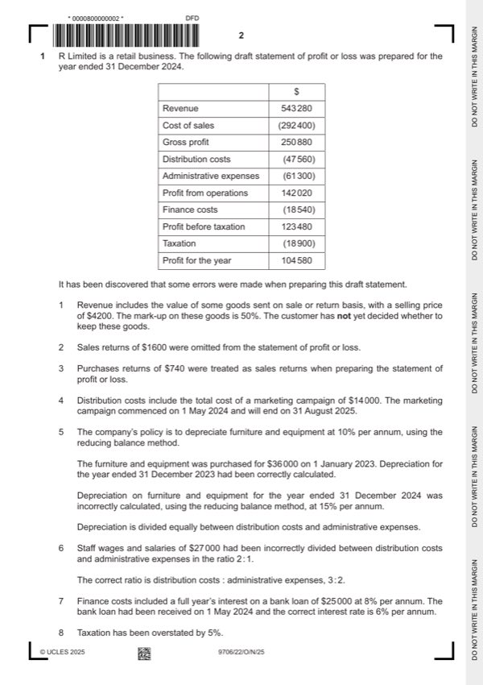

Question 1

Original paper page 2
Part 1(a) — solution
- $740 = $538 220 (1) OF
- $292 400 – $2 800 (1) – purchases returns $740 = $288 860 (1) OF
- depreciation $3 600) = $3 240
- Incorrect depreciation 15% $32 400 = $4 860
Mark points
- $740 = $538 220 (1) OF
- $292 400 – $2 800 (1) – purchases returns $740 = $288 860 (1) OF
- depreciation $3 600) = $3 240
- Incorrect depreciation 15% $32 400 = $4 860
Part 1(a) — solution
- Marketing prepaid $14 000 ½ = $7 000
- Wages and salaries wrong allocation 2/3 $27 000 = $18 000;
- correct allocation 3/5 $27 000 = $16 200
- Wages and salaries wrong allocation 1/3 $27 000 = $9 000
- correct allocation 2/5 $27 000 = $10 800
- loan interest should have been 6% 2/3 $25 000 = $1 000
- Correct finance costs $18 540 – $1 000 = $17 540 (1)
Mark points
- Marketing prepaid $14 000 ½ = $7 000
- Wages and salaries wrong allocation 2/3 $27 000 = $18 000;
- correct allocation 3/5 $27 000 = $16 200
- Wages and salaries wrong allocation 1/3 $27 000 = $9 000
- correct allocation 2/5 $27 000 = $10 800
- loan interest should have been 6% 2/3 $25 000 = $1 000
- Correct finance costs $18 540 – $1 000 = $17 540 (1)
Part 1(b) — solution
- W1: Final Dividend = 250 000 shares $0.10 = $25 000
- W2: Rights issue = 2/7 $700 000 = $200 000
- Share premium = 100 000 $0.50 = $50 000
- W3 Interim Dividend =4% $700 000 = $28 000
Mark points
- W1: Final Dividend = 250 000 shares $0.10 = $25 000
- W2: Rights issue = 2/7 $700 000 = $200 000
- Share premium = 100 000 $0.50 = $50 000
- W3 Interim Dividend =4% $700 000 = $28 000
Part 1(c) — solution
Advise the directors which option they should choose. Justify your advice by 7
discussing both financial and non-financial factors of each option.
Option A (Max 4)
For
Reducing inventory will reduce storage costs (1)
(Reduced order size may have a (temporary)) positive impact on cashflow/reduce
cash outflow (in the short term) (1)
Less cash tied up in inventory (1)
Against
May lose (trade) discounts/be charged higher price (1) reducing profits (1) and would
have a negative effect on liquidity (1)
Reduced inventory levels may have a negative effect on customer
demand/sales/customers switch to competitors (1)
(May cause ‘stock-outs’) reducing revenue, profits and liquidity (1)
Option B (Max 4)
For
Improved credit terms will improve liquidity (1)
Regular deliveries may reduce risk of inventory wastage (1)
Regular deliveries may result in less storage costs (1)
Less likely to run out of inventory/easier to predict amount needed/react more quickly
(1)
Against
Regular deliveries may increase (administration/carriage) cost (1)
Reduced inventory levels may have a negative effect on customer
demand/sales/customers switch to competitors (1)
Will supplier prove reliable/be on time (1)
Provide goods of same quality 1)
Accept other valid responses
Decision supported with a comment (1)
Mark points
- Include the ideas shown in the solution above.